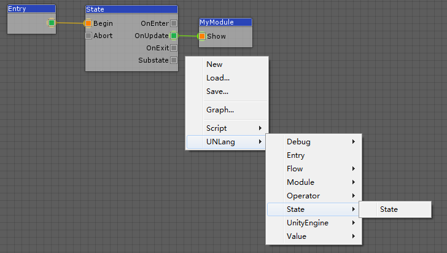
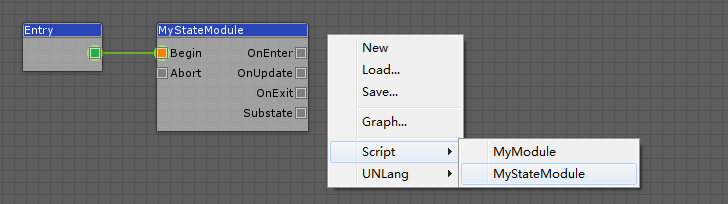

UNLang 状态是状态机的状态类型，因为状态机是一种处理游戏逻辑的通用方式。使用状态, 只要这个状态没有结束，使用者就可以实现循环逻辑。
当然，使用者可以通过重写LangNode来实现基础的状态，只是UNLang已经提供了一个内建的状态供使用者重定义。
状态
UNLang状态提供了一些默认的LangSpot。
| 管脚 | 描述 |
|---|---|
Begin |
状态入口。 |
Abort |
强制状态退出。 |
OnEnter |
状态初始化触发器。 |
OnUpdate |
状态帧循环触发器。 |
OnExit |
状态终止触发器。 |
Substate |
状态的子状态. |
如何使用状态
有两种方式使用UNLang状态。
让我们用
状态实现每一帧打印一次Hello UNLang!。
使用状态触发其他模块
直接使用UNLang状态来驱动其他逻辑。

使用OnUpdate输出管脚来触发UNLang节点章节创建的MyModule模块，因为OnUpdate会被每一帧触发一次。
扩展状态
实现MyStateModule来做同样的事情。
using UNLang; |
重写OnExecute保护方法打印常量字符串。

区别
这两种方式的最大区别是是否这段逻辑能在UNLang中控制。如果使用者希望在UNLang中控制，那么将逻辑以模块方式输出，再通过内建的基础模块进行组合；或者在模块内实现所有逻辑，而只是用UNLang来触发。
如何使用主要取决于逻辑的复杂度和可重用性，这全都由使用者决定。